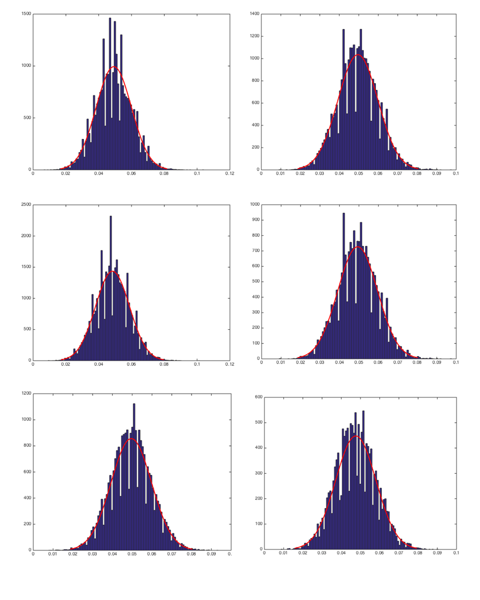
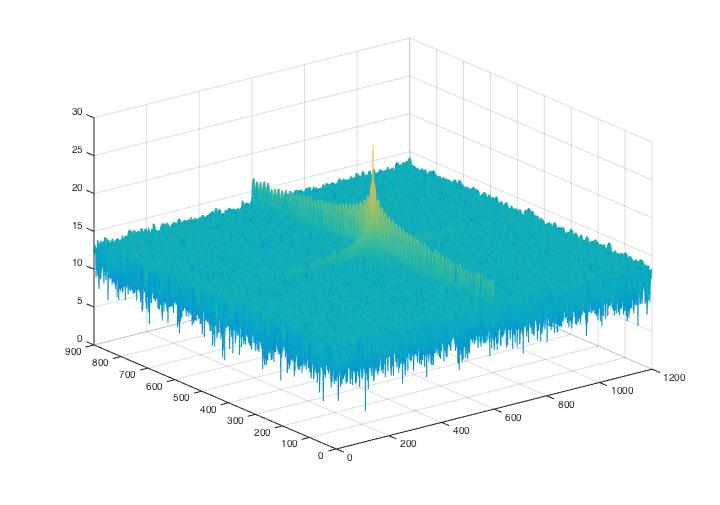
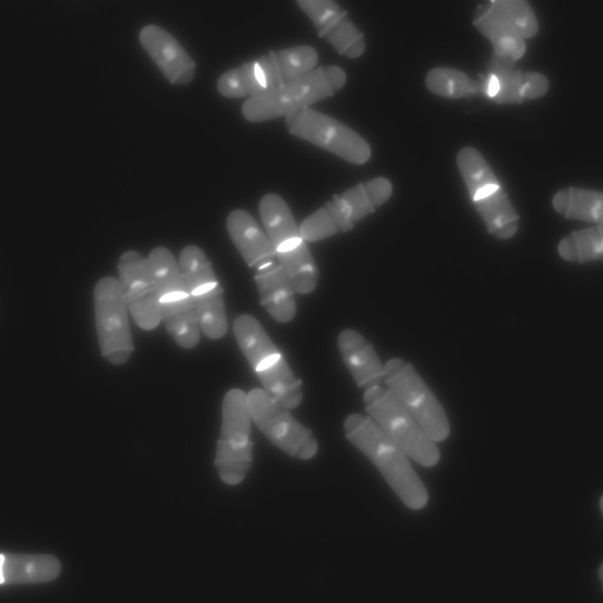
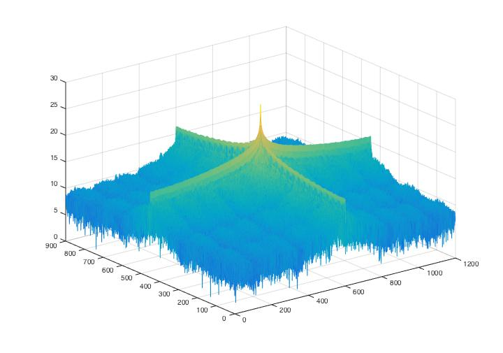
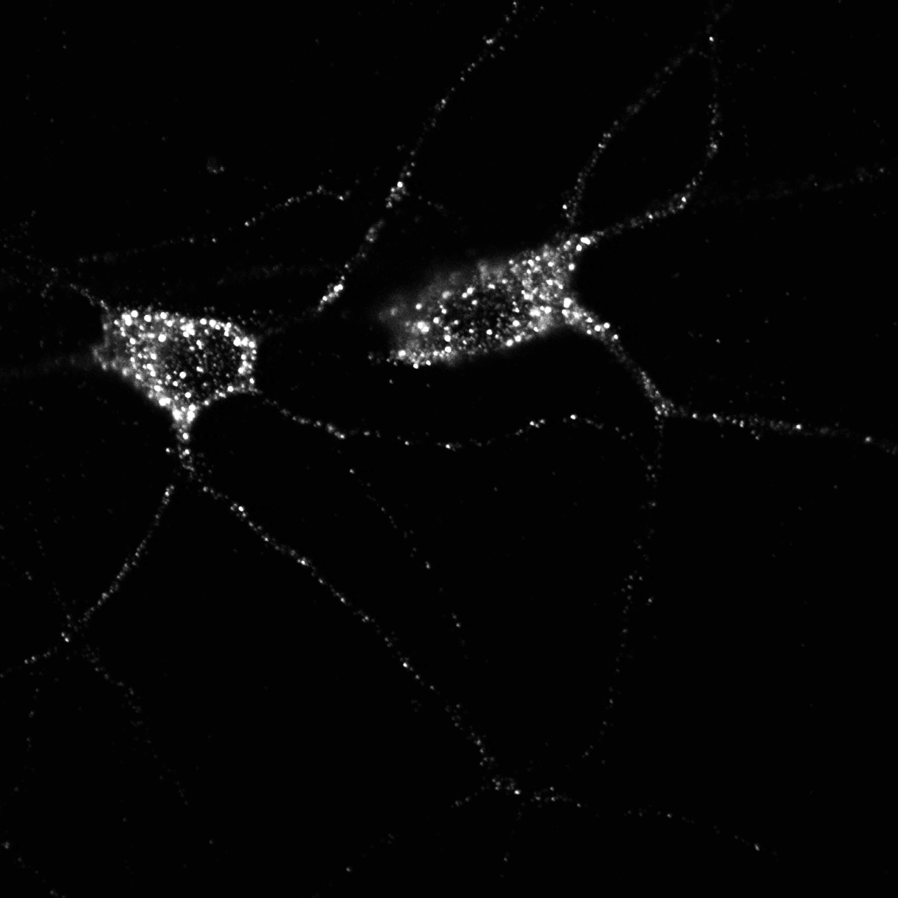
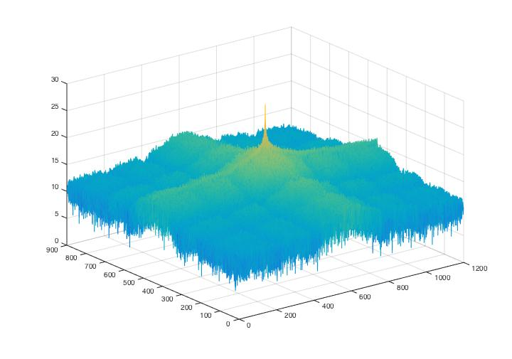

Antibiotic resistance bacteria are consistently causing global health crisis and are difficult to treat. This project aims to discover putative antibiotic resistance related genes in Enterococcus faecalis samples collected from clinical patients in Westchester Medical Center by nasal swab. Part of these samples show resistant phenotype against Daptomycin treatment while the remaining samples remain sensitive. The DNA sequences of all these samples are obtained using next generation sequencing. Next these sequences are filtered by variant calling and the information of SNP (single nucleotide polymorphism) position is obtained. Next all these sequences are annotated by a bioinformatics tool called Prokka to predicted the putative gene function. I also employed statistical method to verify the result. I performed Chi-square test over the samples using R to see how significant the SNP allele is related to resistance and sensitive samples respectively. P values for each SNP are calculated to show the correlation. I developed a program in Python to automatically determine whether a SNP is inside a gene coding region in chromosome and therefore causing a mutation. If so, it would predict the animo acid coded by the corresponding codon and classify the mutation into synonymous(causing functional change in protein product) or non-synonymous(the mutation lead to the same animo acid and no change in the protein product).
Analyzed and classified the noise distribution of background noises cropped from a series of fluorescence images of Drosophila vesicle transport. An example image is shown as Fig.1.
Fig 1. An example fluorescence image of Drosophila vesicle transport.
Fig 2. Histogram of background noise distribution of Fig.1 changed over space.
Fig 3. Power spectrum graphs for noise analysis of Fig.1 (The result indicates a white noise feature).
Fig 4. Orignial bioimage data of yeast (S. Matsumoto, M. Hayano, Y. Kanoh, H. Masai, Multiple pathways can bypass the essential role of fission yeast Hsk1 kinase in DNA replication initiation, Journal of Cell Biology, 195:387-401, 2011.).
Fig 5. Power spectrum graphs for noise analysis of Fig.4.
Fig 6. Orignial bioimage data of a synapse (Baez, L. Luchelli, D. Maschi, M. Habif, M. Pascual, M. Thomas, G. Boccaccio, Smaug1 mRNA-silencing foci respond to NMDA and modulate synapse formation, Journal of Cell Biology 195:1141-1157, 2011.).
Fig 7. Power spectrum graphs for noise analysis of Fig.6
The typeII CRISPR/Cas9 system is an effective way of genome engineering to facilitate RNA-guided site-specific genomes edit by designing sgRNA to target DNA cleavage. The DNA double-strand breaks can stimulate homology- directed repair and induce minimal NHEJ (Non-Homologous End Joining)-mediated indel (insertion/deletion) mutation. However, it is still a conundrum to precisely predict the exact sequence changes in the targeted loci. In order to analyze sequence variations in genome editing using CRISPR/Cas9 system on a base-level, I developed a Perl program to analyze sequence data and calculate the percentages of insertion/deletion(indel) and the mutation types(frame-shift/in-frame) based on the differences output generated by Codon Code Aligner software after aligning sequence samples. The program can also calculate the amounts of samples according to different indel sizes. The sample sequences used in this study are the sequencing results of EMX1 gene and B2M gene from human 293T cells and CD274 gene and B2M gene from human H441 cells after being edited by CRISPR/Cas9 system. The results show that all the sequence has a high percentage of both indel and frame-shift mutation. Most of the indel pattern are deletion. The results indicate that CRISPR/Cas9 System is efficient in causing loss of function in encoded proteins. It also indicates that it is practical to analyze indel statistic using the Perl program cited in this study.

Fig 1. H441-CD274 sample sequences alignment using CodonCode Aligner software (indel region)

Fig 2. 293T-EMX1 sample sequences alignment using CodonCode Aligner (indel region)

Fig 3. 293T-EMX1 sample sequences alignment using CodonCode Aligner (indel region)

Fig 4. 293T-EMX1 sample sequences alignment using CodonCode Aligner (indel region)

Fig 5. 293T-EMX1 sample sequences alignment using CodonCode Aligner (indel region)

Fig 6. 293T-EMX1 sample sequences alignment using CodonCode Aligner (indel region)
Protein-RNA interaction is a very important issue in biological study. The data I used in this project are all exacted from a database call starBase(http://starbase.sysu.edu.cn/), which focuses on decoding Pan-Cancer and Interaction Networks of small non-coding RNA and RNA-binding proteins (RBPs) from large-scale CLIP-Seq (HITS-CLIP, PAR-CLIP, iCLIP, CLASH) data. And here visualizing the interaction network can give us a more clear view on the relationship between small-noncoding RNA and RNA-binding protein. The results show that some RBPs interact with most of the non-coding RNA, which might indicate that these proteins might play important roles in cancer pathway and therefore shed light for researcher to develop new clinical treatments.


- Received Best software project in 2013 iGEM (International Genetic Engineering Machine) world competition
- Received Gold Award in 2013 iGEM (International Genetic Engineering Machine) world competition

A screen shot of the software track of 2013 iGEM official site. The illustration was made by me^_^ ! Click the picture to see the original website.
This website is designed and developed by Xinran Li.© Copyright reserved.